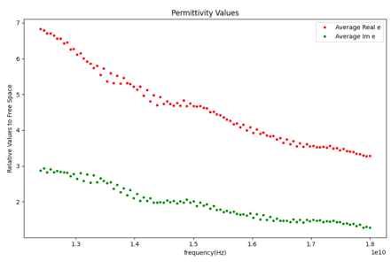
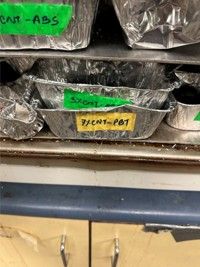
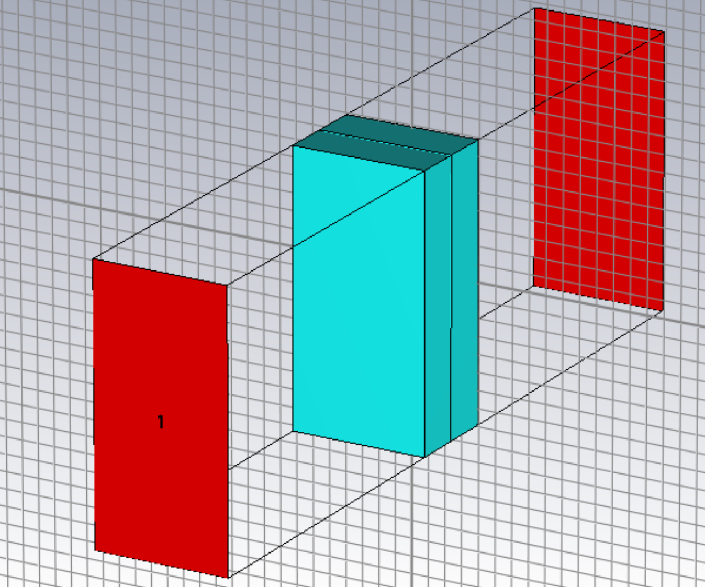

Project Overview
Explored the electromagnetic absorption properties of multi-layered EMI shielding composites, focusing on ABS and PBT matrices with varying carbon nanotube (CNT) content. Validated shielding effectiveness through combined experimental fabrication and electromagnetic simulations.



My Contributions
-
Fabricated over 20 layered composite samples with 1–5% CNT content using material molding techniques, then characterized absorption efficiency with lab measurements. Conducted CST Studio and ANSYS simulations to verify results and optimize design, identifying two-layer and three-layer structures as the most effective configurations.
Technologies
ANSYS Electronics, CST Studio, Material Fabrication, Laboratory TestingWhat I Learned
This project strengthened my understanding of EMI shielding mechanisms, material fabrication challenges, and multiphysics simulations. I learned how to connect experimental data with numerical models to validate designs and how material composition directly impacts electromagnetic performance.